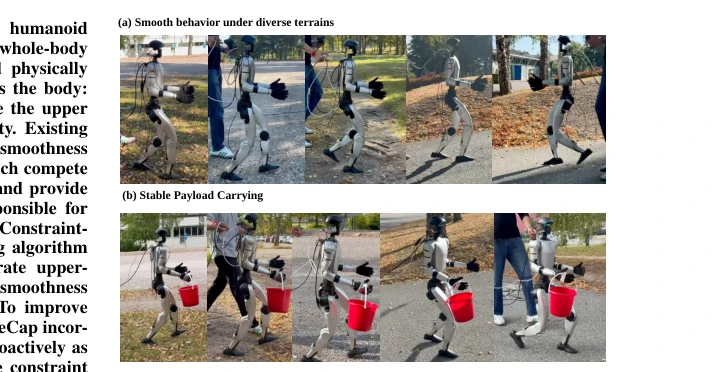
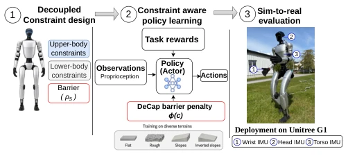
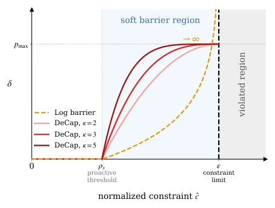
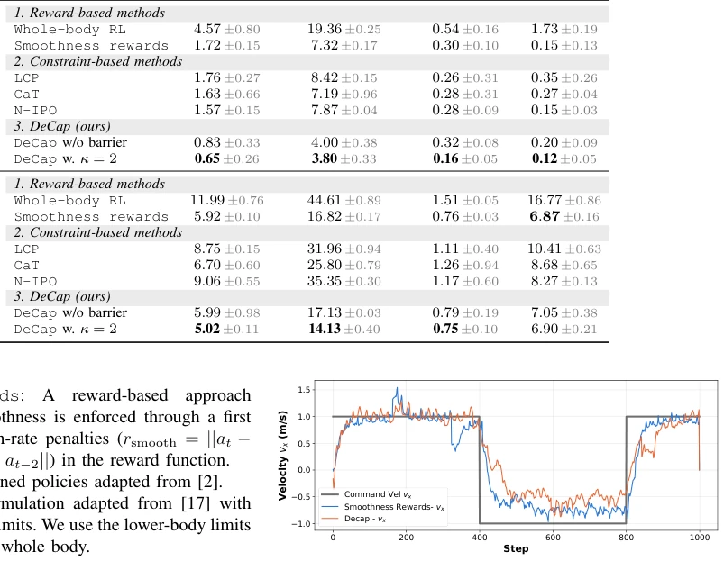
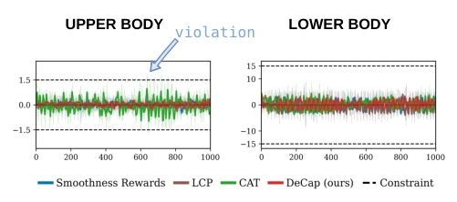
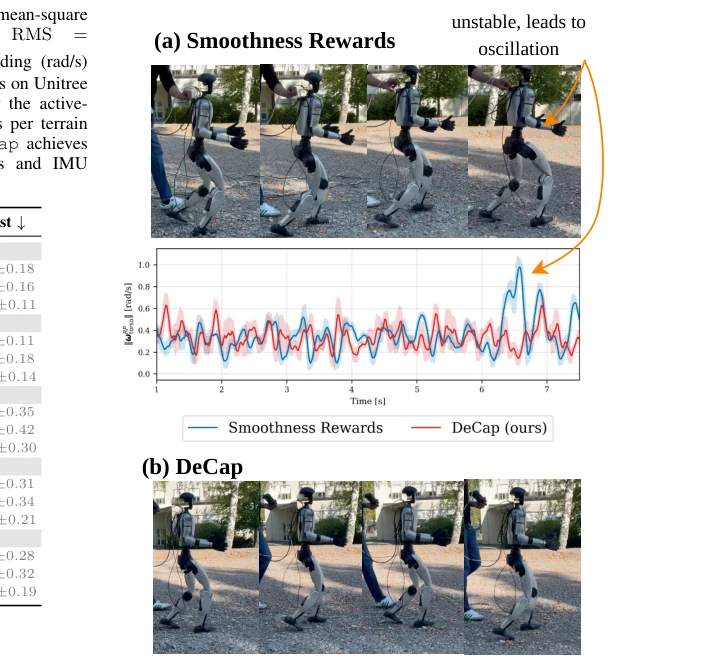
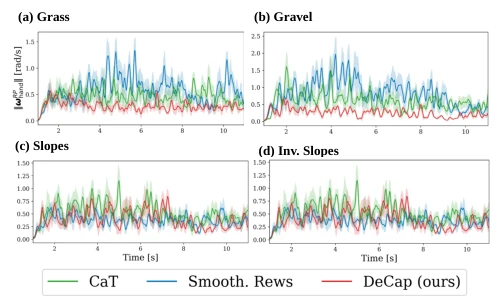

This paper teaches a lesson to RL researchers who tune parameters using "smoothness" as a reward term: stop using magic numbers to balance task performance and body jitter. DeCap's core logic is simple and direct: manage the upper and lower halves separately; the upper body must be steady as a rock, the lower body flexible as a snake, directly applying physical hard constraints. Although "constraints are truth" sounds appealing, the authors have not completely escaped the fate of "parameter tuning"—the activation threshold and shape parameters of that soft barrier still rely on manual trial and error, otherwise training collapses directly. However, achieving zero-shot transfer to grass, gravel, and even slope climbing on Unitree G1 indeed proves that explicit constraints are more reliable than implicit rewards. The only drawback is that if switching to a robot with completely different joint torque characteristics, this set of fixed physical limits might still need re-tuning, after all, "one-size-fits-all" constraints may not be universal on heterogeneous hardware.
When deploying humanoid robots in the real world, motion smoothness is not only a comfort issue but also key to hardware lifespan and safety. Existing methods mainly rely on auxiliary reward terms in reinforcement learning (e.g., action rate penalty) to implicitly pursue smoothness [2], [4]. This design has two fatal flaws: first, task goals and smoothness are coupled through weights, leading the policy to sacrifice smoothness for short-term rewards, producing high-frequency jitter or excessive acceleration [2], [7]; second, reward weights lack physical units, making it difficult to transfer between different terrains or tasks, requiring extensive manual re-tuning [11], [12]. Additionally, traditional methods often treat the body as a whole, ignoring the different smoothness needs of the upper and lower body of humanoid robots: the lower body needs high reactivity to cope with terrain impact, while the upper body needs high stability to maintain perception and load [5], [6]. Therefore, there is an urgent need for a method that does not rely on reward engineering, can directly constrain physical quantities, and can decouple body regions.

Fig. 1: Our approach formulates whole-body smoothness as ex- plicit physical constraints, with decoupled limits Eupper and Elower for upper- and lower-body joint groups. The resulting policy is deployed zero-shot on the hardware, producing smooth behaviors across diverse indoor and outdoor terrains: grass, gravel, slopes, and inverse slopes as well as during terrain transitions and payload carrying.
DeCap is based on the Constrained Reinforcement Learning (CRL) framework, modeling humanoid full-body control as a CMDP, with the goal of maximizing task reward under the premise of satisfying explicit physical constraints. The overall process is divided into three parts: constraint definition, soft barrier penalty design, and policy optimization. First, decouple full-body smoothness into two sets of constraints for upper and lower body, setting physical upper limits for action rate, acceleration, torque, and velocity respectively (e.g., upper body action rate limit 5.0 rad/s, lower body 20.0 rad/s), directly constraining based on physical quantities rather than reward terms. Second, addressing the problem of gradient divergence of traditional log barrier functions at boundaries, propose a Bounded Barrier Penalty. This penalty activates when approaching the constraint boundary (e.g., at 70%), compressing infinite gradients to finite values through a smooth saturation function, providing foresight gradient signals while avoiding numerical instability. Finally, convert the penalty into a per-step random termination probability, combining with PPO algorithm for training, enabling the policy to actively avoid before approaching physical limits, rather than post-penalty.

Fig. 2: DeCap overview. An actor-critic policy is trained with privileged critic observations under smoothness constraints, with separate limits Eupper and Elower applied to upper- and lower-body joints. Training is randomized across terrains; the resulting policy is deployed and evaluated on the Unitree G1 with three IMUs measuring stability.

Fig. 3: DeCap vs log barrier behavior at the boundary: Our soft barrier penalty ϕ(ˆci,t) increases smoothly as the normalized constraint ˆci,t approaches the constraint limit.
Experiments were completed in Isaac Lab simulation and Unitree G1 real robot, covering grass, gravel, slopes, and various terrains and load scenarios. Baselines include reward-based Whole-body RL, Smoothness rewards, and constraint-based LCP, CaT, N-IPO. Evaluation metrics cover action rate, acceleration, velocity, and energy consumption. Results show DeCap reduces upper body action rate by 2.5 times on the real robot, acceleration reduced by 2.18 times, significantly better than all baselines. Ablation experiments show that introducing soft barrier further reduces constraint violation rate, but overly high barrier parameters lead to task performance drop. Additionally, IMU data shows DeCap maintains the lowest angular velocity fluctuation across different terrains, and requires no manual intervention in load carrying tasks, verifying the generalization ability of constraints.

Fig. 4: Velocity tracking of DeCap and Smoothness rewards.

Fig. 5: Per time-step traces for joint velocity for upper- and lower- body groups. Dashed lines indicates the constraint limit.

Fig. 6: Torso IMU angular velocity over time on outdoor gravel. The Smoothness rewards baseline exhibits intermittent spikes, consistent with the higher RMS in Table VIII, whereas DeCap maintains a smooth profile throughout the run.

Fig. 7: Right wrist IMU angular velocity over time during whole- body control while carrying a 1.2 kg payload. DeCap maintains an overall low, stable profile throughout the run, whereas the baselines shows larger oscillations.